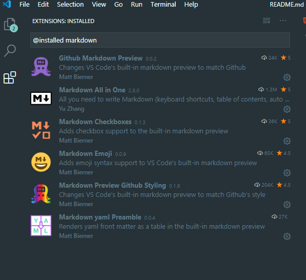

Presentation of Markdown
Markdown permits to create documentation very easyly.This post offers a sample of basic Markdown syntax that can be used. Headings, Paragraph,Line Breaks..
Link to Markdown guide
If you want to learn moreStep by step description
First you have to install Markdown extensions in Visual Studio Code.
Code examples
The following elements represent six levels of section headings.

You can see different exemple of tag
For example the HTML tag "hr" is --- in MarkdownImportant Things to remember (words, command, links...)
Extension for Markdom files is .mdTo wrap text : ALT + Y